Após o acesso, note que a pagina é bastante extensa, utilizando a barra de rolagem a sua direita, verifique algumas opções para download, como mostra a imagem abaixo:
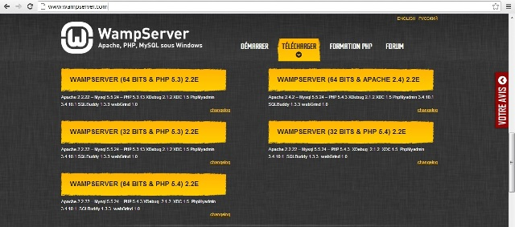
Após a escolha de acordo com as configurações do seu Sistema Operacional e baixar o WampServer, execute o instalador de acordo conforme imagem abaixo:
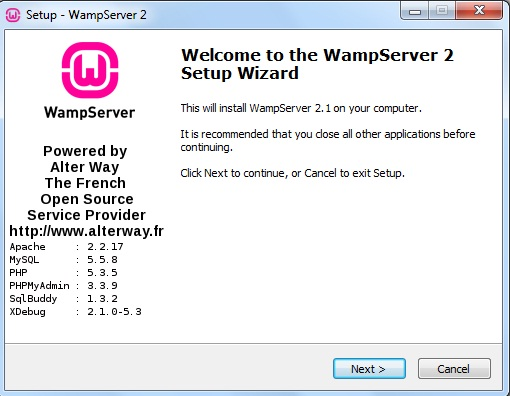
Após clicar em NEXT, aparecerá uma janela informando os termos de licença de uso do programa:
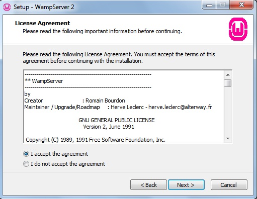
Marque a primeira opção "I ACCEPT THE AGREEMENT" e clique em NEXT para dar continuidade ao processo de instalação, em seguida aparecerá mais uma janela do assistente informando o local de instalação do WampServer. Por padrão fica em "C:\wamp", caso seja de sua escolha pode haver uma mudança, mas no nosso caso deixaremos da forma padrão:
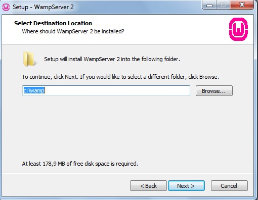
Mais uma vez clique em NEXT, a próxima janela do assistente é para a criação de ícones de acesso, cabe ao próprio usuário a escolha deste passo:
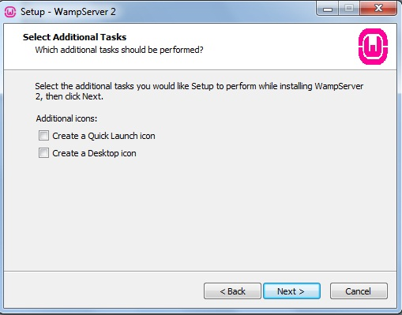
Após a escolha sobre a criação dos ícones de acesso, clique em NEXT, uma nova janela do assistente aparecerá, READY TO INSTALL que significa "pronto para instalar", clique em INSTALL para iniciar o processo:
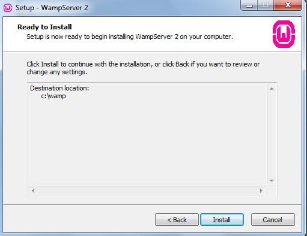
Após clicar em INSTALL aguarde alguns segundo para concluir o processo, lembrando que em algumas máquinas podem demorar poucos minutos:
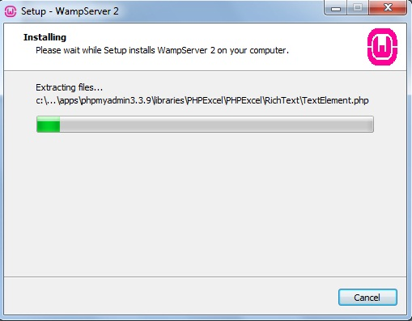
Após o preenchimento da barra aparecerá uma janela para a escolha do browser padrão que irá executar aplicações PHP:
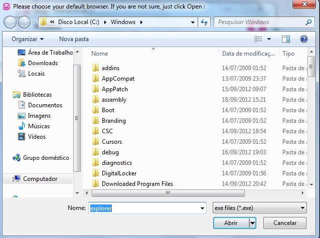
Após esta etapa, uma nova janela surgirá solicitando SMTP e EMAIL para fazer algumas configurações, neste caso, deixaremos como está, no formato padrão:
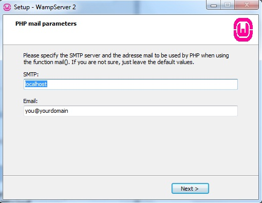
Após este processo finalizamos a instalação do WampServer, clique em NEXT para concluir, ao final aparecerá uma ultima janela informando que o aplicativo foi instalado:
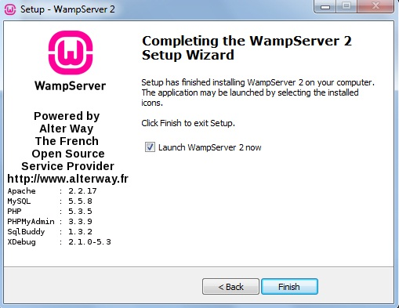
Após concluir a instalação aparecerá um ícone na barra de tarefas do Windows, caso ele fique verde, isso significa que o WampServer está funcionando normalmente:
Após o passo acima, tudo estará resolvido, tente acessar a página local do WampServer no seu navegador utilizando o caminho:http://localhost/ Após o passo acima verifique se o seu navegador está acessado a página inicial:
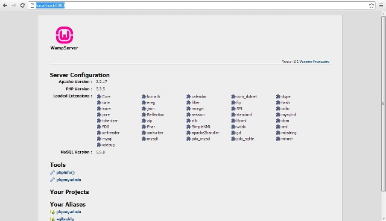